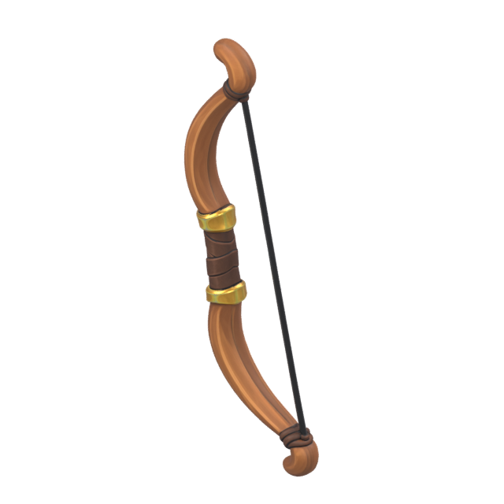
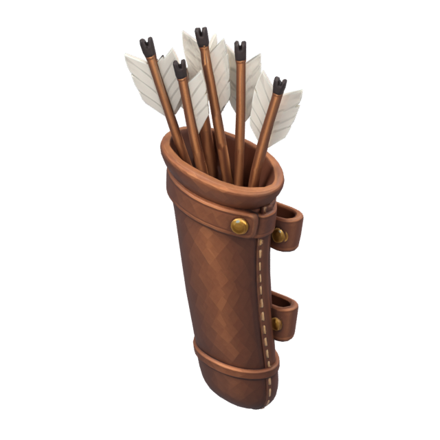
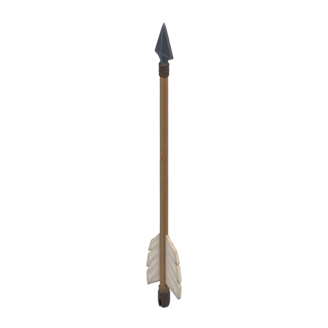

Version remplacée après correction des orientations. Voir la version corrigée.
Batrafian · premier montage 3D
Le modèle Meshy original, son arc en main gauche et le carquois dans le dos. Six rendus du même modèle, avec quatre vues isométriques à 30°. La flèche est conservée séparément pour le futur tir.
Aperçu statique à valider. Les mains n'ont pas d'os individuels pour les doigts : la prise reste approximative. La flexion de l'arc et de la corde, les animations et l'intégration au jeu restent à préparer.
Les trois accessoires d'origine
Ces vues isolées sont cadrées individuellement pour l'inspection : leurs tailles à l'écran ne représentent pas leurs proportions une fois équipés.

Arc

Carquois rempli

Flèche indépendante